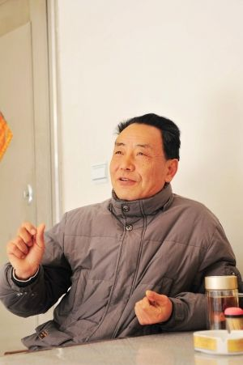

雕版印刷大师陈义时：为了一句承诺

陈义时，出生于1947年11月，江苏扬州人，国家级非物质文化遗产雕版印刷技艺代表性传承人，高级工艺美术师，江苏省工艺美术大师。陈义时出身于雕版世家，祖父陈开良、父亲陈正春世代从事雕版技艺，开有雕版作坊，是扬州著名的雕版师，扬帮雕版技艺的领头人。陈义时从十四岁起随父刻苦钻研雕版技艺，一生致力于雕版工艺事业并作出重大贡献。
陈义时刻书的时候，眼睛距版面约20厘米，若不是架着500度的老花镜，他可以更近一些。
“雕版刻字，眼睛距版面越近越好，这样运刀更精准，线条更流畅。与看书用眼完全不同。”
俯首、屏气、凝神，右手攥刀，左手推行。这样的姿势，他已做了半个世纪从13岁的顽童，到64岁的老者，从高旻寺里的小学徒，到享誉华夏的国家级非物质文化遗产传承人。
陈开良、陈正春、陈义时，祖孙三代，一把拳刀，薪火相传，见证了近代扬州雕版印刷技艺的兴衰，背负起扬州雕版印刷技艺明日的复兴重任。
陈正春临终前，对八个子女中排行老六的陈义时独独不舍，叮嘱再三：“你一定要把我们祖传的技艺传承下去。”这句话，让陈义时将一生都刻进了梨木板上的点、竖、撇、捺；这句话，更让陈义时逼着女儿陈美琦下岗，并操起了刀、铲、凿、锯。
如今，这对父女依旧清贫，靠薪资勉强度日。然而，他们却再放不下手中那把拳刀。这不仅是因为“父命难违”，更重要的是，保护和传承扬州雕版印刷技艺的重担已经搁到了他们肩上。
阳春三月的杭集陈庄，空旷的田野早已覆上了一层绿油油的麦苗。陈义时家40多年的老宅正在翻建，并加盖了小二层。这是陈义时结婚时盖的两进瓦房。距此不远，便是陈家当年曾红极一时的“杭集刻字坊”旧址，如今早已化作“历史的尘埃”。
“房子不翻不行了，本打算用作传习所的，屋子太小徒弟们没地方操作。”
“但前些日子，广陵古籍刻印社的领导来请我了，希望我能回去，把传习所办起来，并开发一些精品。我已经答应了。雕版技艺能够得到重视，是我毕生的夙愿和追求。如今，我的信心就像这田里的麦苗，又开始茁壮地成长起来。春天真的到了。”
父亲打了陈义时两耳光。“我们陈家的技术绝不能让人说不好！”
陈正春育有五男三女，陈义时排行老六，却唯他子承父业。
“从我爷爷陈开良那代开始，即清光绪年间，我们陈家就在杭集开办了雕版刻字作坊。当时杭集是扬州非常有名的雕版印刷之乡，其名声亦如今天的牙刷酒店用品之乡。爷爷当年开办的刻字作坊在杭集是规模最大的，单聘请的技艺娴熟的工匠就超过了30人。我的父亲陈正春后来接管了刻字坊的生意。与爷爷相比，他更是无比狂热的喜爱这一行。那时，陈家刻字作坊雕出了扬州一大批经典史籍，如《扬州丛刻》、《四明丛书》、《暖红室》等都是那时雕刻出来的。当年的雕版加工生意很红火，很多大资本家都有这样的需求。不少客人专程从上海、浙江，甚至东北赶到杭集来订货。如果不是日本人打到中国，如果不是文革，这个行业不会那么快就没落下来。”
当年，陈正春与两个妹妹均为雕版好手，只是妹妹嫁作人妻后便不再刻字。祖业当需继承，陈正春开始在八个子女中物色接班人。
“三个哥哥和弟弟似乎都对雕版刻字兴趣不大，姐姐和妹妹又是女子，当年父辈的观念是‘传男不传女’，所以，就让我跟着学。我那时才13岁，根本就是个不懂事的孩子。那年，正好扬州古籍书店在高旻寺组织了70多人进行刻补古籍版本的工作，父亲便把我带到了高旻寺，算是正式教我学习雕版刻字了，我成为寺里最小的学徒。”
从刻木丝，刻废样，到刻笔画，刻宋字，天性聪颖的陈义时很快就掌握了雕版刻字的基本技能。陈正春对儿子的要求却无比苛刻，只要有丝毫差错便严厉训斥。
“当时有个叫陈兴荣的雕版技师，为父亲刻《西厢记》时，因为没刻行间的线条，父亲竟把辛辛苦苦刻出来的版子给摔掉了。陈兴荣不服，说你儿子刻的跟我也差不多嘛。父亲二话不说，走到我旁边就打了我两个耳光。我当时被打蒙了，根本不知道父亲为什么突然毫无缘由地打我。父亲说，打你是因为我们陈家的雕版技术从来没有被人批评过，你记住，陈家的技术绝不能让人说不好！”
这两记耳光打在14岁的陈义时脸上时，他并不理解父亲的用意。50年后，年过花甲的陈义时终于明白，当年父亲的残酷和不近人情正是他激发潜能、博取成功的动力。
陈义时从此对技艺更加精益求精，刻苦研习。高旻寺内六年的时光，不仅让陈义时成长为一个20岁的小伙儿，更令他成长为一名年轻的优秀雕版技师。
“只是好景不长，文化大革命爆发后，雕版印刷被列入‘四旧’，我们从事的行当也被视为印制黄色书籍。一把火，那么多珍贵的雕版就这样付之一炬。记得中央内参一位记者在扬州看到红卫兵烧古书和雕版，就向中央反映情况，希望能保留部分作品。这才让一部分宝贵的雕版得以幸存。”
“破四旧”让陈义时整整十年没再拿起拳刀，但他凭着精湛的雕刻技艺，成为当地远近闻名的雕花师傅。他刻的花纹美极了，不仅为他赢得了“苏北第一刀”的美誉，更为他赢得了一位姑娘的芳心。这个名叫徐夏娣的同乡姑娘，陪伴陈义时度过了没有拳刀的六年时光，又支持他再次拿起拳刀，并一直陪伴他，至今已走过了近四十年的时光。
文革中期，年近八旬的陈正春因长年伏案雕刻，劳累过度，生命走到了尽头。临终，他留给陈义时的除了那句“保住祖传技艺”的遗嘱，还留下了未完成的《里堂道听录》。陈义时含泪为父亲完成了遗作，并默默下定决心，要像父亲那样，将一生都献给雕版事业。
谁会相信一位大师只月入千余。“只有耐得清贫才能成就事业。”
1985年，陈义时已小有名气，经扬州市人大讨论研究，破例给他解决了户口问题，户籍落在了广陵古籍刻印社。而此前，他已在这里工作多年。
上世纪五十年代，父亲陈正春参与了刻印社的创建，在这里工作，陈义时依然能时时感受到父亲曾驻守过的“精神家园”。
在此期间，陈义时与同事们一起完成了一大批古典著作的雕版刻字工作，包括《礼记正义校勘记》、《西厢记》、《桃花扇》、《春灯谜》、《红佛记》、《四明丛书》、《老子》、《西方三圣》、《欠伸稿》等都是在此期间完成的。这批作品为抢救和保护历史古籍文献，并复兴扬州雕版印刷技艺起到了巨大的推动作用。
2007年6月5日，60岁的陈义时成为文化部公布的第一批国家级非物质文化遗产项目代表性传承人，扬州雕版印刷技艺的史册上，将永远留下“陈义时”三个字。
“名”和“利”有时并不是双收的，当人们以为成为大师的陈义时必然会获得丰厚的经济回报时，他们一定不会相信，陈义时至今仍拿着一千多元的退休工资，而老伴徐夏娣则没有收入。
“干雕版印刷这行就不可能指望靠它发财。我女儿上学的时候，成绩非常优秀，就因为我的收入太少，连70块钱的借读费都交不起，初中毕业只能辍学。跟着她哥哥一起进了玉器厂工作。我曾经劝说我的儿子继承我的事业，但他没答应，坚持要做收入更多的玉雕行业。我只好强迫女儿辞职回家，跟我学雕版技术。因为我答应过父亲，必须让这门技艺传承下去。”
如今，陈义时的儿子已经过上了富裕的生活，不仅购置了高档住宅，还在市区买了门面房，开起了40多万元的轿车。而“女承父业”的陈美琦则依然在坚守着。
“我留给女儿的，或许不是一大笔物质财富，但她却得到了无比丰厚的精神财富。现在，我可以很自豪地说，扬州的雕版刻字技艺，除了我，没有人能够超越我的女儿，她已经具备了传承这门技艺的实力。只有耐得住清贫，才能成就这份事业。”
三个80后接过陈义时的衣钵，决心光大雕版技艺。“我甘愿倾其所有，绝不保留。”
顾孝慈，23岁，南京人，师从陈义时三年；陈振浩，25岁，扬州人，师从陈义时两年；芮欣，28岁，扬州人，师从陈义时一年。
三个80后小伙子，成为陈义时如今正在精心培育的三棵苗子。
早在1978年，刚过而立之年的陈义时便带过六七个徒弟，只是当时编制问题无法解决，几个徒弟都没能再从事雕版印刷工作，改了行。
此后，陈义时又断断续续带过一些徒弟，最终，能坚守在这个阵地直到今天的，已经寥寥无几。
“其实我非常理解他们的想法。且不说他们，就连我自己的儿子，我都没法说服他从事雕版工作。现在的年轻人都很现实，纯粹为了事业而甘受清贫的人太少了。”
28岁的芮欣是陈义时三个弟子中入门最晚，但却是年龄最大的一位。每天上午9点到下午5点，他会到位于杭集镇王集村陈庄组的师傅家中，学习和实践雕版刻字技术，风雨无阻，历时一载。而此前，他是一家汽车租赁公司的老板。
“我父亲芮明扬与师傅是几十年的故交和老同事，父亲也是从雕版印刷工作的，他主要负责雕版印刷的书写工序，师傅雕刻，所以我对雕版技术从小便不陌生，也是从内心热爱这个行业，才决定拜师学艺的。”
芮欣将租赁公司的六七辆车减少至三辆，并整包给了企业，以减少他的管理难度，一门心思投入到了雕版技术的学习中来。
“我现在很清楚，将来一定会从事这个行业。虽然现在国家已经对雕版技艺进行保护，但还需要更多的发展和创新。我认为文化传承与商业运作并不矛盾，也只有让更多人接受雕版印刷的产品，才能真正刺激这个行业的发展。”
在芮欣看来，雕版印刷的未来一片光明。“虽然电脑技术的发展让激光照排等技术已经非常发达，但手工的雕版印刷技术是无法取代的。正如打印机无法取代书法家，照排也无法取代雕版。千篇一律，毫无个性的工业化产品，怎么能替代变化丰富，具有文化内涵的手工技艺？韩国、日本的例子告诉我们，无论经济和社会怎么发展，传统的文化和技艺永远都比工业化内在价值高出一等。”
“师带徒”是陈义时当下传承技艺的模式，而扬州广陵古籍刻印社国家级雕版印刷技艺传习所正式运作后，他的大师工作室不仅将承担起产品开发的任务，更要担负起更多接班人培养的重任。“我们会借助更多老雕版艺人的力量，通过师带徒和办学的方式扩大招生规模，让这门技艺最大程度的传播开。作为传承人，我必将倾其所有，绝不保留。”
2009年9月30日，从阿布扎比传来令陈义时振奋的消息，联合国教科文组织保护非物质文化遗产政府间委员会决定，以扬州广陵古籍刻印社为申报主体，中国雕版印刷技艺，正式入选《世界人类非物质文化遗产代表作名录》。
“雕版技艺世代传承的梦想终于实现了，父亲的遗愿可以了却了。”
在陈义时家的院子里，有一棵生长了约半个世纪的金桂。如今，硕大的树冠宛若一把撑起的巨型绿伞，荫蔽着青砖小瓦的老宅。而一粒粒青色的桂子，密密麻麻地挂满了枝桠。
“铁树开花易见，桂树挂果难寻。”这株结满果实的桂树不正是陈义时苦尽甘来，即将迎接收获的人生写照吗？